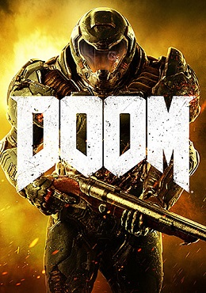
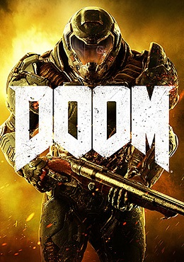
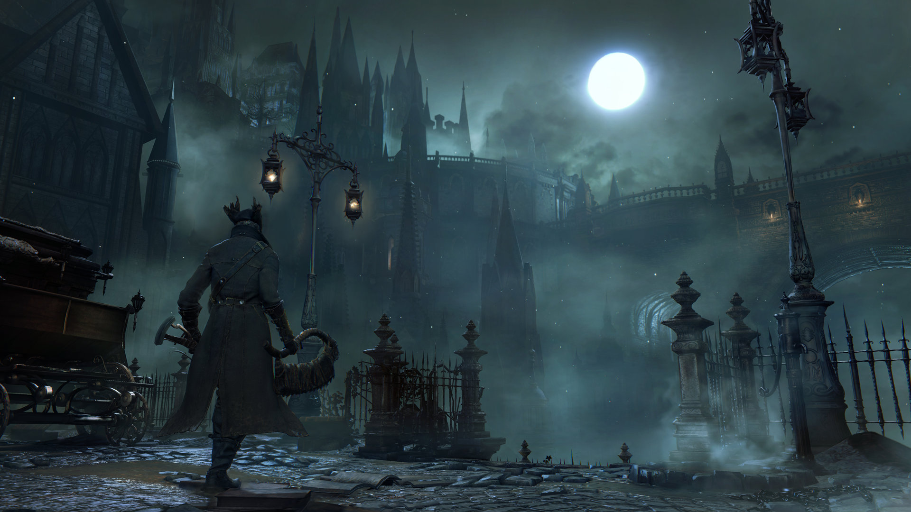

I started working with HTML not to long ago so although one may call me a noob with it I prefer to think about myself as fresh and ready to intake information at fast and more raid rate than others already expreienced may have been able too.

 

Some of my favorite video games however this is not where I draw a line on things I like to do and I like to play. However difficult but fair games I like a lot hence the soulsBorne franchise. And I also enjoyed DOOM! a lot because it was a really intense game that made me focus a lot
I started working with HTML not to long ago so although one may call me a noob with it I prefer to think about myself as fresh and ready to intake information at fast and more raid rate than others already expreienced may have been able too.
Admittedly my css skils aren't at the level they need to be but that's mostly because I haven't really had much of a chance. Should I get a larger purpose and chance to use it I'm sure that I could improve quickly at the opportunity. And I'd be able to complete whatever freaking project anybody gave me, no matter how little or how new I am with it.